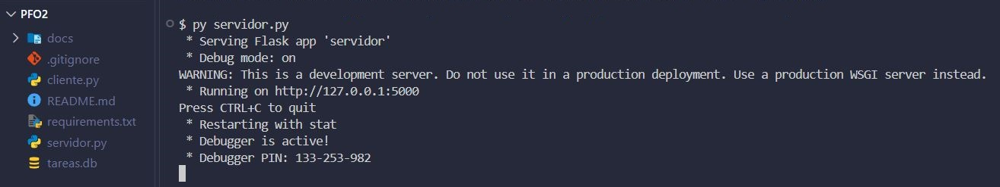
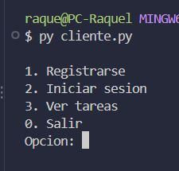
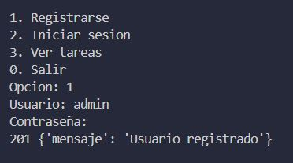
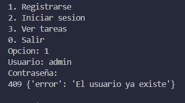
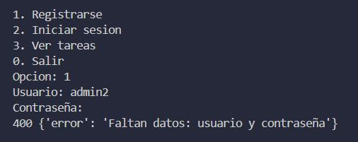
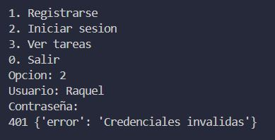
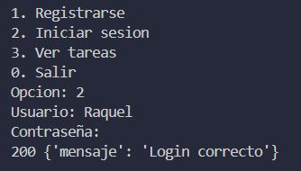
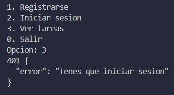
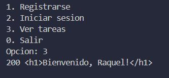
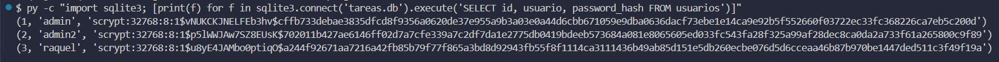

API en Flask con registro de usuarios, inicio de sesión y una ruta de bienvenida. Guarda los datos en SQLite y las contraseñas hasheadas. Programación sobre Redes, IFTS 29.
servidor.py: API Flask con SQLite.cliente.py: cliente de consola con un menú para usar la API.requirements.txt: dependencias (flask y requests).pip install -r requirements.txt
py servidor.py. Queda escuchando en http://127.0.0.1:5000 y crea tareas.db la primera vez.py cliente.py.En Linux o Mac se usa python3 en lugar de py. GitHub Pages solo muestra esta documentación: el servidor se ejecuta en la computadora de quien lo pruebe.
| Método | Ruta | Qué hace |
|---|---|---|
| POST | /registro | Recibe usuario y contraseña y guarda el hash en la base. Responde 201, 400 o 409. |
| POST | /login | Verifica las credenciales e inicia la sesión. Responde 200 o 401. |
| GET | /tareas | Muestra el HTML de bienvenida si hay una sesión iniciada. Responde 200 o 401. |










Hasheo las contraseñas para no guardar nunca la contraseña real en la base de datos. El hash es una función de un solo sentido: a partir del hash no se puede volver a la contraseña. Si alguien consigue la base, solo ve los hashes, que no sirven para entrar ni dicen qué contraseña eligió cada usuario. Además, la librería le agrega un salt aleatorio a cada contraseña, así que dos usuarios con la misma contraseña terminan con hashes distintos y no sirven las tablas de hashes ya calculados. En el login el servidor no descifra nada: vuelve a calcular el hash de lo que escribió el usuario y lo compara con el que tiene guardado.
SQLite viene incluido en Python, así que no hace falta instalar ni configurar un servidor de base de datos. Toda la base es un solo archivo, tareas.db, que se crea solo la primera vez que corre el servidor y se puede borrar para empezar de cero. Para un proyecto chico como este, con pocos usuarios, alcanza, y quien quiera probarlo solo tiene que correr el servidor.